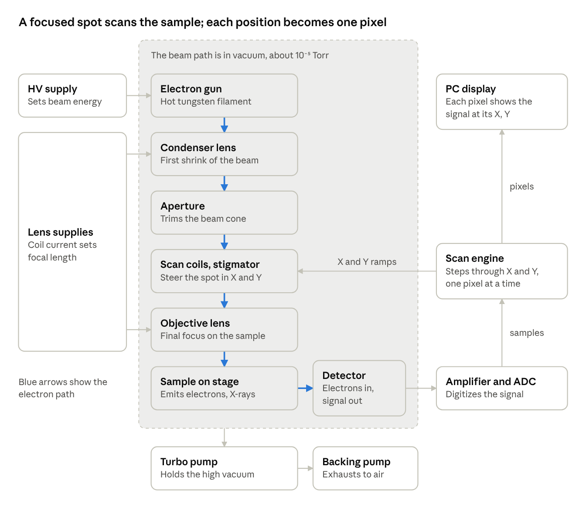
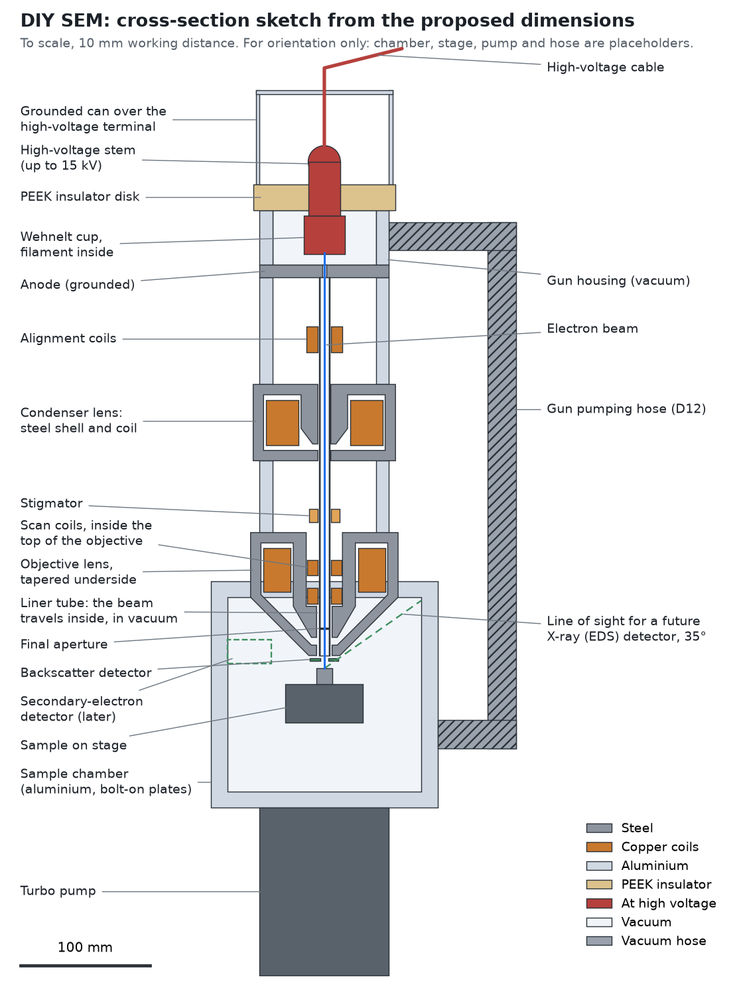

A scanning electron microscope, built from scratch
A hobby project to design and build a working electron microscope in a home workshop: vacuum system, electron gun, magnetic lenses, scan electronics and imaging software.
What an SEM is
A scanning electron microscope does not take a picture the way a camera does. It focuses a beam of electrons into a tiny spot, sweeps that spot across the sample line by line, and records one number for each spot position. Lay those numbers out in a grid and you have the image. The smaller the spot, the finer the detail, which is how an SEM sees things far smaller than any light microscope can.

What this build is
- Electron gun. A hairpin of tungsten wire heated white hot, held at up to 15,000 volts below ground so the electrons it gives off are flung down the column.
- Two magnetic lenses. Each is a coil of copper wire inside a turned steel shell with a precise gap. The magnetic field leaking from the gap bends the electron paths, as a glass lens bends light. Both lenses are made here on the lathe.
- Vacuum. Electrons cannot travel through air, so the whole beam path is pumped down to about a hundred-millionth of atmospheric pressure by a turbo pump backed by a small roughing pump.
- Sample chamber. A block of aluminium machined on the mill, with bolt-on plates sealed by O-rings so ports can be added or re-cut later.
- Electronics and software. Designed from the ground up: an FPGA scan engine that steps the beam and digitises the signal pixel by pixel, precision current supplies for the lenses, a microcontroller for sequencing, and a hard-wired safety interlock chain. A PC application does the imaging. See the electronics page for how it fits together.

Where it stands
The idea has been around for years, sketched and shelved more than once. Two things finally made it a project in October 2026. The skills it needs, turning and milling, PCB design and software, had all come together in one workshop. And writing things down stopped being the bottleneck: with AI tools turning working notes into a proper design record in minutes, the calculations, decisions and surprises get captured as they happen. Left to itself, this project would never have been written down, and without that record there is no plan to hold it to.
The build runs in seven phases, and the next phase is only started when the previous one has passed a measured test. As of October 2026 the physics has been worked through on paper, the first parts have been drawn in 3D, and the vacuum pumps and gauge have been bought used and are on their way. Nothing has been machined yet.
- Paper design. Work the optics out on paper, simulate the lenses, draw the first parts. Done
- Vacuum. Pumps and gauge proven on a test volume. Parts bought, test next. Now
- Gun. High voltage held safely, filament emits, beam current measured.
- Optics. Chamber, column and lenses built. Focus and steering shown to work.
- First image. A picture of a copper mesh.
- Performance. A proper detector, then resolution below one micron.
- Capability. Automation, then X-ray element identification.
The scan electronics run in parallel with all of this, since they need no vacuum and no beam. See the build log for what each milestone turned up.
Safety
The finished machine contains a lethal high-voltage supply and produces X-rays wherever the beam lands. Both are handled by hardware rather than by procedure: every high-voltage conductor sits inside grounded metal, a relay chain cuts the supply unless the chamber is pumped down and every cover is closed, and the beam path is wrapped in enough metal that a survey meter reads nothing above background.